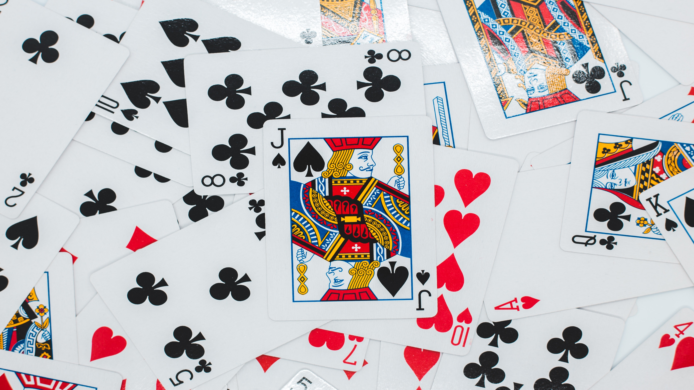

About Me
My name is Neil Kim and I am a Senior at the University of Michigan studying Computer Science.
I am currently seeking to expand my abilities in the world of software through experiences out of college.
Other than my passion for software, I enjoy playing video games, playing golf and basketball, and watching sports.
This project showcases the use of a deque container that is used as both a stack and a queue. The program is given
a map with obstacles, enemies and elevators as input. Using the deque as a search container a path is found and traced back
to print the answer from the start to the finish. The project is Mario themed, so the idea is that Mario must find
Princess Peach in Bowser's Castle.
This project showcases the use of a priority queue by simulating a multi-planetary war. The project is Star Wars themed and is given a list of
solider attributes, number of generals, number of planests and more as input. It can also be randomly processed to create a random battle instead of
inputting specific input. The battle commences on run and the outcome of each battle including the total war, with specifc stats is outputted.
Priority Queue
Implementation
This is a implementation of several priority queue libraries. Including a binary priority queue, a pairing priority queue, a sorted priority queue, and an unordered-fast priority queue.
This project showcases the use of a hashtable to create an excerpt list from large log files.
The program will begin by reading an input file containing log entries,
and then will enter an interactive mode where the user can perform timestamp, category, and keyword searches
for the purpose of constructing an "excerpt list" of the log file. logman also allows the user to manage and
display this "excerpt list" to identify the important/relevant entries of their log file.
Optimization
Traveling Salesperson
This project showcases minimum spanning tree algorithms, branch and bound algorithms and the Traveling Salesperson problem. In the first
part you are given map coordinates as input and are asked to calculate the MST and output its weight. In the later parts of the project
we solve the Traveling Salesperson problem in the most efficient way possible using a branch and bounc algorithm.

Euchre (pronounced “YOO-kur”) is a trick-taking card game popular in Michigan.
It is most commonly played by four people in two partnerships with a deck of 24 cards.
Partnerships accumulate points for winning tricks, and the game continues until one side
reaches the maximum number of points. This project provides a simulation of the game. It allows
up-to four players to play. Any amount of the players can be actual users, or they can also be bots.
This project showcases a program that allows for proper image resizing. This is done by implementing
the seam carving algorithm. This allows for content aware-resizing of images. The end result is that we can resize images
in a way that changes the aspect ratio but does not distort the image.
Length Extension & Hash Collision Attack
This project showcases a python script that shows the vulnerabilties of the MD5, SHA-1, and SHA-256 hashing
methods. In the first part the script preforms a length extension attack on a poorly secured website. The second
part of the project contains two python script that have identical MD5 hashes but different SHA-256 hashes. With this
collision an attack can be preformed.
This project showcases an SQL program that mimics the database of the popular social media platform "Facebook". Renamed "Fakebook"
the program allows for tables to be created and dropped for many aspects of the platform data. It allows for the insertion of a public
data set to fill the implemented tables. Finally, the program allows the user to create and visualize views of the database.
Machine Learning
Piazza Posts
This project showcases a program that uses natural language processing and machine learning techniques
to automatically identify the subject of posts. As input we used posts from a popular website used amongst college
students called piazza. The goal was to train the program to accurately classify the posts by their respective
topics.
Rock, Paper, Scissors
Shoot

This project showcases a program that simply simulates the well-known game Rock, Paper, Scissors. The game can be
played with two users or it can be played with a bot.
Encrypting and Decrypting
Cipher Text
This project showcases a program that can both encrypt and decrypt ciphertext. The program features three
different ciphers. These ciphers includes the famous Cesars' Cipher, the well-known Vigenere Cipher, and finally
the complex Polybius Cipher. With user inputted data, the text can be both encrypted using a key and decrypted to
reveal the original message.
This project showcases a program that simulates the popular game Battleship. Battleship is a strategy-based
game which requires players to strategically geuss where their opponents ships are. The game is played
with two players, and the game continues until one of the players looses all their ships in battle.
This project showcases a program that allows the user to create images. Users can draw lines, set pixels and redraw
images to their specification. Users can choose to draw using lines, points, rectangles, circles, triangles and other
shapes. The user can also set the colors to their specification to create fun images.